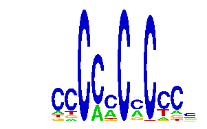

family_13 |
|---|
|  |
| Download PWM |
| Download instances (motifs) |
| Show motif distribution |
Query_ID | Query_Consensus | Subject_Name | Source_DB | Subject_ID | Length | Orientation | Offset | Divergence | Overlap | Subject_Consensus |
|---|---|---|---|---|---|---|---|---|---|---|
| family_13 | NCCCCCCMCCCN | TBX15 | HOCOMOCO | TBX15_HUMAN.H10MO.D | 19 | reverse-complement | -13 | 0.587 | 6 | GGGGGGGGGNGGGTGGGNN |
| family_13 | NCCCCCCMCCCN | TFAP2A | JASPAR | MA0003.1 | 9 | reverse-complement | 7 | 0.588 | 5 | GCCNNNRGS |
| family_13 | NCCCCCCMCCCN | SP3 | HOCOMOCO | SP3_HUMAN.H10MO.B | 20 | reverse-complement | -5 | 0.705 | 12 | NNNNGGGGGCGGGGCNNGNN |
| family_13 | NCCCCCCMCCCN | SP1 | HOCOMOCO | SP1_HUMAN.H10MO.C | 19 | reverse-complement | -3 | 0.708 | 12 | GNGNNGGGGGCGGGGCNNN |
| family_13 | NCCCCCCMCCCN | KLF16 | HOCOMOCO | KLF16_HUMAN.H10MO.D | 19 | reverse-complement | 5 | 0.749 | 7 | NGGGGYGGGGNGGGGGGGG |
| family_13 | NCCCCCCMCCCN | ZN740 | HOCOMOCO | ZN740_HUMAN.H10MO.D | 14 | reverse-complement | -1 | 0.753 | 12 | NKGGGGGGGGNNNN |
| family_13 | NCCCCCCMCCCN | EBF1 | JASPAR | MA0154.1 | 10 | as given | 7 | 0.781 | 5 | MCCCMAGGGA |
| family_13 | NCCCCCCMCCCN | ZIC2 | HOCOMOCO | ZIC2_HUMAN.H10MO.C | 9 | reverse-complement | -3 | 0.825 | 6 | NGGGTGGTN |
| family_13 | NCCCCCCMCCCN | MAZ | HOCOMOCO | MAZ_HUMAN.H10MO.A | 22 | reverse-complement | 5 | 0.842 | 7 | GGGCGGGGSSGGGGGGGGGGGG |
| family_13 | NCCCCCCMCCCN | SP2 | HOCOMOCO | SP2_HUMAN.H10MO.C | 22 | reverse-complement | -6 | 0.868 | 12 | GGGNNGGGGGCGGGGCCNGNGS |
| family_13 | NCCCCCCMCCCN | REL | JASPAR | MA0101.1 | 10 | reverse-complement | -4 | 0.874 | 6 | SGGGNTTTCC |
| family_13 | NCCCCCCMCCCN | EGR1 | HOCOMOCO | EGR1_HUMAN.H10MO.S | 11 | reverse-complement | 5 | 0.883 | 7 | NGCGKGGGCGG |
| family_13 | NCCCCCCMCCCN | NFIC | HOCOMOCO | NFIC_HUMAN.H10MO.A | 17 | as given | -11 | 0.900 | 6 | NCTTGGCANNNNKCCAN |
Sequence | Start_position (from start) | Start_position (from end) | Average conservation | Best conservation score | Instance_with_best_CS | Best_Z-score | Instance_with_best_ZS | Strand |
|---|---|---|---|---|---|---|---|---|
| chr14:55622731-55623731 | 640 | 652 | 0.00225 | 0.009 | ...CCCCRCYC. | 12.093159 | ...CCCCRCYC. | -1 |
| chr14:63850973-63851973 | 592 | 604 | 0.00108333 | 0.002 | ...CCCCRCYC. | 12.093159 | ...CCCCRCYC. | 1 |
| chr2:17380028-17381028 | 485 | 497 | 8.33333e-05 | 0.001 | ...CCCCRCYC. | 12.093159 | ...CCCCRCYC. | -1 |
| chr5:122552226-122553226 | 729 | 741 | 0.00666667 | 0.019 | .CYCCTCWCCCC | 12.849219 | .CYCCTCWCCCC | -1 |
| chr8:59099171-59100171 | 520 | 532 | 0.0146667 | 0.021 | .CYCCTCWCCCC | 12.849219 | .CYCCTCWCCCC | -1 |
| chr19:36203497-36204497 | 492 | 504 | 0.00558333 | 0.03 | ...CCCCRCYC. | 12.093159 | ...CCCCRCYC. | -1 |
| chr3:101890560-101891560 | 923 | 935 | 0.833167 | 1 | ...CCCCRCYC. | 12.093159 | ...CCCCRCYC. | -1 |
| chr11:104438402-104439402 | 0 | 12 | 0.00908333 | 0.02 | .CCCMMCCC... | 12.08905 | .CCCMMCCC... | 1 |
| chr17:26987569-26988569 | 762 | 774 | 0.0015 | 0.004 | ...CCCCRCYC. | 12.093159 | ...CCCCRCYC. | -1 |
| chr3:101890560-101891560 | 921 | 933 | 0.673333 | 1 | .CCCCRCCCY.. | 12.577604 | .CCCCRCCCY.. | -1 |
| chr9:115005427-115006427 | 518 | 530 | 0.0145833 | 0.028 | .CCCMMCCC... | 12.08905 | .CCCMMCCC... | 1 |
| chr8:59099171-59100171 | 996 | 1008 | 0.00125 | 0.002 | ...CCCCRCYC. | 12.093159 | ...CCCCRCYC. | 1 |
| chr7:120099953-120100953 | 922 | 934 | 0.000666667 | 0.002 | ...CCCCRCYC. | 12.093159 | ...CCCCRCYC. | 1 |
| chr14:102285069-102286069 | 243 | 255 | 0.00641667 | 0.035 | ...CCCCRCYC. | 12.093159 | ...CCCCRCYC. | 1 |
| chr2:163110676-163111676 | 697 | 709 | 0.00283333 | 0.02 | ...CCCCRCYC. | 12.093159 | ...CCCCRCYC. | 1 |
| chr1:72991230-72992230 | 602 | 614 | 0.0346667 | 0.216 | .CCCMMCCC... | 12.08905 | .CCCMMCCC... | -1 |
| chr13:12461280-12462280 | 229 | 241 | 0.00208333 | 0.009 | ...CCCCRCYC. | 12.093159 | ...CCCCRCYC. | 1 |
| chr6:24547513-24548513 | 685 | 697 | 0.00358333 | 0.01 | .CCCCRCCCY.. | 12.08905 | .CCCMMCCC... | 1 |
| chr11:54836382-54837382 | 217 | 229 | 0.00458333 | 0.008 | .CCCMMCCC... | 12.08905 | .CCCMMCCC... | -1 |
| chr14:63881391-63882391 | 426 | 438 | 0.108333 | 0.774 | ...CCCCRCYC. | 12.093159 | ...CCCCRCYC. | -1 |
| chr1:92913453-92914453 | 495 | 507 | 8.33333e-05 | 0.001 | .CCCMMCCC... | 12.08905 | .CCCMMCCC... | 1 |
| chr13:12461280-12462280 | 231 | 243 | 0.00216667 | 0.009 | .CCCCRCCCY.. | 12.08905 | .CCCMMCCC... | 1 |
| chr10:7849902-7850902 | 569 | 581 | 0.0045 | 0.014 | ...CAWCGCWC. | 12.997694 | ...CAWCGCWC. | 1 |
| chr17:10501742-10502742 | 616 | 628 | 0.023 | 0.037 | .CYCCTCWCCCC | 14.384416 | .CCCCWCWCCCC | -1 |
| chr7:148085594-148086594 | 346 | 358 | 0.00108333 | 0.003 | .CCCCRCCCY.. | 12.08905 | .CCCMMCCC... | 1 |
| chr2:77886805-77887805 | 479 | 491 | 0.0441667 | 0.085 | .CCCMMCCC... | 12.08905 | .CCCMMCCC... | -1 |
| chr17:27029416-27030416 | 825 | 837 | 0.00125 | 0.007 | ...CCCCRCYC. | 12.093159 | ...CCCCRCYC. | 1 |
| chr5:122543312-122544312 | 658 | 670 | 0.0121667 | 0.031 | .CCCMMCCC... | 12.08905 | .CCCMMCCC... | -1 |
| chr15:89255646-89256646 | 668 | 680 | 0.9165 | 0.996 | .CCCCRCCCY.. | 12.577604 | .CCCCRCCCY.. | 1 |
| chr3:159445053-159446053 | 472 | 484 | 0.0005 | 0.002 | .CCCMMCCC... | 12.08905 | .CCCMMCCC... | -1 |
| chr11:12334656-12335656 | 617 | 629 | 0.6365 | 0.767 | .CCCCRCCCY.. | 12.08905 | .CCCMMCCC... | 1 |
| chr10:7849902-7850902 | 507 | 519 | 0.00708333 | 0.012 | ...CCCCRCYC. | 12.093159 | ...CCCCRCYC. | -1 |
| chr9:115005427-115006427 | 516 | 528 | 0.0203333 | 0.046 | ...CCCCRCYC. | 12.093159 | ...CCCCRCYC. | 1 |
| chr14:55622731-55623731 | 638 | 650 | 0.001 | 0.009 | .CCCCRCCCY.. | 12.577604 | .CCCCRCCCY.. | -1 |
| chr10:6977498-6978498 | 487 | 499 | 0.005 | 0.027 | .CCCMMCCC... | 12.08905 | .CCCMMCCC... | 1 |
| chr7:3298068-3299068 | 452 | 464 | 0.00241667 | 0.011 | ...CCCCRCYC. | 12.093159 | ...CCCCRCYC. | 1 |
| chr2:77886805-77887805 | 481 | 493 | 0.0385 | 0.085 | ...CCCCRCYC. | 12.093159 | ...CCCCRCYC. | -1 |
| chr11:54836382-54837382 | 218 | 230 | 0.00458333 | 0.008 | .CCCCRCCCY.. | 12.577604 | .CCCCRCCCY.. | -1 |
| chr14:63986546-63987546 | 225 | 237 | 0.07775 | 0.706 | CCCCACCCYWG. | 12.697084 | CCCCACCCYWG. | 1 |
| chr5:122552226-122553226 | 588 | 600 | 0.000666667 | 0.002 | .CCCMMCCC... | 12.577604 | .CCCCRCCCY.. | -1 |
| chr19:36189355-36190355 | 760 | 772 | 0.00675 | 0.017 | .CYCCTCWCCCC | 14.384416 | .CCCCWCWCCCC | -1 |
| chr5:77541031-77542031 | 384 | 396 | 0 | 0 | ...CCCCRCYC. | 12.093159 | ...CCCCRCYC. | 1 |
| chr7:16897218-16898218 | 805 | 817 | 0.00966667 | 0.013 | ...CCCCRCYC. | 12.093159 | ...CCCCRCYC. | 1 |
| chr5:148636823-148637823 | 330 | 342 | 0.00266667 | 0.009 | .CCCCRCCCY.. | 12.577604 | .CCCCRCCCY.. | -1 |
| chr5:77541031-77542031 | 386 | 398 | 8.33333e-05 | 0.001 | .CCCMMCCC... | 12.577604 | .CCCCRCCCY.. | 1 |
| chr4:133848968-133849968 | 456 | 468 | 0.0075 | 0.013 | ...CAWCGCWC. | 12.997694 | ...CAWCGCWC. | 1 |
| chr9:25060245-25061245 | 520 | 532 | 0.453833 | 0.716 | .CCCMMCCC... | 12.08905 | .CCCMMCCC... | -1 |
| chr15:103213773-103214773 | 758 | 770 | 0.01275 | 0.028 | .CYCCTCWCCCC | 14.384416 | .CCCCWCWCCCC | -1 |
| chr8:13253380-13254380 | 106 | 118 | 0.0158333 | 0.018 | .CCCCRCCCY.. | 12.08905 | .CCCMMCCC... | 1 |
| chr10:7849902-7850902 | 505 | 517 | 0.00766667 | 0.012 | .CCCCWCWCCCC | 14.384416 | .CCCCWCWCCCC | -1 |
| chr14:102285069-102286069 | 245 | 257 | 0.025 | 0.139 | .CCCMMCCC... | 12.577604 | .CCCCRCCCY.. | 1 |
| chr4:133871308-133872308 | 205 | 217 | 0.00358333 | 0.014 | ...CCCCRCYC. | 12.093159 | ...CCCCRCYC. | 1 |
| chr1:92913453-92914453 | 493 | 505 | 0.00025 | 0.001 | ...CCCCRCYC. | 12.093159 | ...CCCCRCYC. | 1 |
| chr11:82724646-82725646 | 122 | 134 | 0.5805 | 0.715 | .CCCMMCCC... | 12.577604 | .CCCCRCCCY.. | -1 |
| chr7:119885169-119886169 | 506 | 518 | 0.997417 | 1 | ...CCCCRCYC. | 12.093159 | ...CCCCRCYC. | -1 |
| chr4:129472154-129473154 | 689 | 701 | 0.00966667 | 0.022 | ...CCCCRCYC. | 12.093159 | ...CCCCRCYC. | -1 |
| chr2:84474956-84475956 | 982 | 994 | 0.993333 | 1 | ...CCCCRCYC. | 12.093159 | ...CCCCRCYC. | 1 |
| chr14:63850973-63851973 | 594 | 606 | 0.00116667 | 0.002 | .CCCMMCCC... | 12.577604 | .CCCCRCCCY.. | 1 |
| chr19:36193489-36194489 | 181 | 193 | 0.001 | 0.006 | ...CCCCRCYC. | 12.093159 | ...CCCCRCYC. | 1 |
| chr11:94743641-94744641 | 766 | 778 | 0.00175 | 0.009 | .CCCCRCCCY.. | 12.08905 | .CCCMMCCC... | 1 |
| chr5:130235071-130236071 | 247 | 259 | 0.00575 | 0.01 | CCCCACCCYWG. | 12.697084 | CCCCACCCYWG. | 1 |
| chr2:77886805-77887805 | 432 | 444 | 0.00116667 | 0.002 | ...CAWCGCWC. | 12.997694 | ...CAWCGCWC. | 1 |
| chr17:26984844-26985844 | 221 | 233 | 0.00225 | 0.008 | ...CCCCRCYC. | 12.093159 | ...CCCCRCYC. | -1 |
| chr1:75365769-75366769 | 369 | 381 | 0.0145 | 0.027 | .CCCCRCCCY.. | 12.08905 | .CCCMMCCC... | 1 |
| chr6:112409315-112410315 | 359 | 371 | 0.999583 | 1 | .CCCMMCCC... | 12.08905 | .CCCMMCCC... | -1 |
| chr17:71368522-71369522 | 453 | 465 | 0.0618333 | 0.246 | CCCCACCCYWG. | 12.697084 | CCCCACCCYWG. | 1 |
| chr3:122936962-122937962 | 167 | 179 | 0.000166667 | 0.001 | ...CCCCRCYC. | 12.093159 | ...CCCCRCYC. | -1 |
| chr14:26136986-26137986 | 170 | 182 | 0.00383333 | 0.01 | ...CCCCRCYC. | 12.093159 | ...CCCCRCYC. | 1 |
| chr17:27029416-27030416 | 827 | 839 | 0.0025 | 0.009 | .CCCMMCCC... | 12.577604 | .CCCCRCCCY.. | 1 |
| chr5:148564224-148565224 | 278 | 290 | 0.0871667 | 0.134 | ...CCCCRCYC. | 12.093159 | ...CCCCRCYC. | 1 |
| chr4:133848968-133849968 | 298 | 310 | 8.33333e-05 | 0.001 | ...CCCCRCYC. | 12.093159 | ...CCCCRCYC. | 1 |
| chr8:13253380-13254380 | 107 | 119 | 0.0154167 | 0.018 | CCCCACCCYWG. | 12.697084 | CCCCACCCYWG. | 1 |
| chr14:21486930-21487930 | 608 | 620 | 0.637417 | 0.926 | .CCCMMCCC... | 12.08905 | .CCCMMCCC... | 1 |
| chr3:65298257-65299257 | 527 | 539 | 0.00708333 | 0.036 | ...CCCCRCYC. | 12.093159 | ...CCCCRCYC. | 1 |
| chr2:90958919-90959919 | 347 | 359 | 0.00816667 | 0.026 | .CCCCRCCCY.. | 12.577604 | .CCCCRCCCY.. | -1 |
| chr7:149796346-149797346 | 937 | 949 | 0.02975 | 0.128 | .CCCCRCCCY.. | 12.577604 | .CCCCRCCCY.. | -1 |
| chr19:36189355-36190355 | 764 | 776 | 0.00216667 | 0.007 | .CCCMMCCC... | 12.08905 | .CCCMMCCC... | -1 |
| chr9:25060245-25061245 | 518 | 530 | 0.430333 | 0.716 | ...CCCCRCYC. | 12.093159 | ...CCCCRCYC. | -1 |
| chr5:130235071-130236071 | 244 | 256 | 0.00541667 | 0.01 | ...CCCCRCYC. | 12.093159 | ...CCCCRCYC. | 1 |
| chr17:10501742-10502742 | 326 | 338 | 0.0114167 | 0.018 | ...CCCCRCYC. | 12.093159 | ...CCCCRCYC. | 1 |
| chr2:17380028-17381028 | 483 | 495 | 0 | 0 | .CCCCRCCCY.. | 12.577604 | .CCCCRCCCY.. | -1 |
| chr7:16897218-16898218 | 807 | 819 | 0.00816667 | 0.013 | .CCCCRCCCY.. | 12.08905 | .CCCMMCCC... | 1 |
| chr1:166391413-166392413 | 218 | 230 | 0.00758333 | 0.016 | ...CCCCRCYC. | 12.093159 | ...CCCCRCYC. | -1 |
| chr11:88681810-88682810 | 962 | 974 | 8.33333e-05 | 0.001 | ...CCCCRCYC. | 12.093159 | ...CCCCRCYC. | 1 |
| chr18:56842549-56843549 | 895 | 907 | 0.0634167 | 0.079 | .CCCMMCCC... | 12.08905 | .CCCMMCCC... | 1 |
| chr9:120778468-120779468 | 98 | 110 | 0.0409167 | 0.141 | ...CAWCGCWC. | 12.997694 | ...CAWCGCWC. | -1 |
| chr14:21483110-21484110 | 460 | 472 | 0.0005 | 0.002 | ...CCCCRCYC. | 12.093159 | ...CCCCRCYC. | 1 |
| chr16:96348364-96349364 | 312 | 324 | 0.381333 | 0.426 | .CCCMMCCC... | 12.08905 | .CCCMMCCC... | 1 |
| chr17:26987569-26988569 | 682 | 694 | 0.00341667 | 0.008 | .CYCCTCWCCCC | 12.849219 | .CYCCTCWCCCC | -1 |
| chr8:24498059-24499059 | 937 | 949 | 0.000916667 | 0.004 | .CCCMMCCC... | 12.577604 | .CCCCRCCCY.. | -1 |
| chr5:122543312-122544312 | 463 | 475 | 0.01775 | 0.043 | .CCCCRCCCY.. | 12.577604 | .CCCCRCCCY.. | 1 |
| chr7:52121463-52122463 | 862 | 874 | 0.000666667 | 0.003 | .CCCMMCCC... | 12.577604 | .CCCCRCCCY.. | -1 |
| chr2:77009423-77010423 | 719 | 731 | 0 | 0 | .CCCCRCCCY.. | 12.577604 | .CCCCRCCCY.. | -1 |
| chr1:72991230-72992230 | 575 | 587 | 0.00025 | 0.002 | ...CCCCRCYC. | 12.093159 | ...CCCCRCYC. | 1 |
| chr1:72873097-72874097 | 198 | 210 | 0.00108333 | 0.003 | ...CCCCRCYC. | 12.093159 | ...CCCCRCYC. | -1 |
| chr11:88681810-88682810 | 965 | 977 | 0.00025 | 0.001 | CCCCACCCYWG. | 12.697084 | CCCCACCCYWG. | 1 |
| chr16:4522393-4523393 | 735 | 747 | 0.6875 | 0.987 | .CCCCRCCCY.. | 12.577604 | .CCCCRCCCY.. | -1 |
| chr7:148085594-148086594 | 344 | 356 | 0.00108333 | 0.003 | ...CCCCRCYC. | 12.093159 | ...CCCCRCYC. | 1 |
| chr8:35088887-35089887 | 973 | 985 | 0.00375 | 0.006 | .CCCMMCCC... | 12.08905 | .CCCMMCCC... | 1 |
| chr11:88681810-88682810 | 964 | 976 | 0.000166667 | 0.001 | .CCCCRCCCY.. | 12.08905 | .CCCMMCCC... | 1 |
| chr3:101890560-101891560 | 920 | 932 | 0.590667 | 1 | .CCCMMCCC... | 12.08905 | .CCCMMCCC... | -1 |
| chr11:82724646-82725646 | 124 | 136 | 0.606083 | 0.715 | ...CCCCRCYC. | 12.093159 | ...CCCCRCYC. | -1 |
| chr14:26136986-26137986 | 172 | 184 | 0.00333333 | 0.01 | .CCCCRCCCY.. | 12.08905 | .CCCMMCCC... | 1 |
| chr8:46972744-46974590 | 1762 | 1774 | 0.0189167 | 0.049 | .CCCMMCCC... | 12.08905 | .CCCMMCCC... | -1 |
| chr11:88709913-88710913 | 475 | 487 | 0 | 0 | CCCCACCCYWG. | 12.697084 | CCCCACCCYWG. | 1 |
| chr10:53062926-53063926 | 451 | 463 | 0.01425 | 0.036 | ...CCCCRCYC. | 12.093159 | ...CCCCRCYC. | 1 |
| chr10:53062926-53063926 | 971 | 983 | 0.000666667 | 0.002 | ...CAWCGCWC. | 12.997694 | ...CAWCGCWC. | 1 |
| chr6:112409315-112410315 | 361 | 373 | 0.99525 | 1 | ...CCCCRCYC. | 12.093159 | ...CCCCRCYC. | -1 |
| chr17:10501742-10502742 | 328 | 340 | 0.0105 | 0.013 | .CCCMMCCC... | 12.577604 | .CCCCRCCCY.. | 1 |
| chr5:148636823-148637823 | 170 | 182 | 0.00125 | 0.005 | ...CAWCGCWC. | 12.997694 | ...CAWCGCWC. | 1 |
| chr2:35115003-35116003 | 569 | 581 | 0.196917 | 0.701 | .CCCMMCCC... | 12.08905 | .CCCMMCCC... | -1 |
| chr11:54836382-54837382 | 220 | 232 | 0.00425 | 0.008 | ...CCCCRCYC. | 12.093159 | ...CCCCRCYC. | -1 |
| chr5:31873293-31874293 | 681 | 693 | 0.0269167 | 0.085 | ...CCCCRCYC. | 12.093159 | ...CCCCRCYC. | 1 |
| chr7:56102831-56103831 | 727 | 739 | 0.34825 | 0.563 | .CCCMMCCC... | 12.577604 | .CCCCRCCCY.. | 1 |
| chr8:59795626-59796626 | 146 | 158 | 0.00141667 | 0.005 | ...CCCCRCYC. | 12.093159 | ...CCCCRCYC. | 1 |
| chr14:35400644-35401644 | 873 | 885 | 0.047 | 0.143 | ...CCCCRCYC. | 12.093159 | ...CCCCRCYC. | 1 |
| chr7:52121463-52122463 | 861 | 873 | 0.0005 | 0.002 | CCCCACCCYWG. | 12.697084 | CCCCACCCYWG. | -1 |
| chr17:26977743-26978743 | 608 | 620 | 0.616417 | 0.918 | .CCCMMCCC... | 12.08905 | .CCCMMCCC... | 1 |
| chr4:133848968-133849968 | 300 | 312 | 0.000166667 | 0.001 | .CCCCRCCCY.. | 12.577604 | .CCCCRCCCY.. | 1 |
| chr6:24547513-24548513 | 683 | 695 | 0.00325 | 0.01 | ...CCCCRCYC. | 12.093159 | ...CCCCRCYC. | 1 |
| chr14:21486930-21487930 | 267 | 279 | 0.0638333 | 0.2 | ...CCCCRCYC. | 12.093159 | ...CCCCRCYC. | 1 |
| chr8:59099171-59100171 | 78 | 90 | 0.04075 | 0.071 | .CCCCRCCCY.. | 12.577604 | .CCCCRCCCY.. | -1 |
| chr6:18497654-18498654 | 535 | 547 | 0.00833333 | 0.038 | .CCCMMCCC... | 12.577604 | .CCCCRCCCY.. | 1 |
| chr17:12952223-12953223 | 474 | 486 | 0.00283333 | 0.01 | ...CAWCGCWC. | 12.997694 | ...CAWCGCWC. | 1 |
| chr14:63986546-63987546 | 217 | 229 | 0.0523333 | 0.137 | ...CCCCRCYC. | 12.093159 | ...CCCCRCYC. | 1 |
| chr14:63986546-63987546 | 219 | 231 | 0.0386667 | 0.054 | .CCCCRCCCY.. | 12.08905 | .CCCMMCCC... | 1 |
| chr10:57787265-57788265 | 456 | 468 | 0.02875 | 0.093 | ...CCCCRCYC. | 12.093159 | ...CCCCRCYC. | 1 |
| chr8:59827233-59828233 | 471 | 483 | 0.0045 | 0.01 | ...CCCCRCYC. | 12.093159 | ...CCCCRCYC. | -1 |
| chr14:21483110-21484110 | 780 | 792 | 0.323167 | 0.973 | .CCCCWCWCCCC | 12.849219 | .CYCCTCWCCCC | 1 |
| chr18:35193323-35194323 | 386 | 398 | 0.000916667 | 0.003 | .CCCMMCCC... | 12.08905 | .CCCMMCCC... | 1 |
| chr11:94743641-94744641 | 556 | 568 | 0.612917 | 0.739 | ...CCCCRCYC. | 12.093159 | ...CCCCRCYC. | 1 |
| chr10:56100232-56101232 | 484 | 496 | 0.00641667 | 0.012 | .CCCMMCCC... | 12.08905 | .CCCMMCCC... | -1 |
| chr9:77193286-77194286 | 787 | 799 | 0.00466667 | 0.024 | ...CAWCGCWC. | 12.997694 | ...CAWCGCWC. | 1 |
| chr4:129583226-129584226 | 98 | 110 | 0.00858333 | 0.013 | .CCCMMCCC... | 12.08905 | .CCCMMCCC... | -1 |
| chr1:74008798-74009798 | 620 | 632 | 0.003 | 0.006 | CCCCACCCYWG. | 12.697084 | CCCCACCCYWG. | 1 |
| chr18:61810860-61811860 | 591 | 603 | 0.00116667 | 0.003 | ...CCCCRCYC. | 12.093159 | ...CCCCRCYC. | 1 |
| chr11:104438402-104439402 | 802 | 814 | 0.00025 | 0.002 | .CYCCTCWCCCC | 14.384416 | .CCCCWCWCCCC | -1 |
| chr14:55598649-55599649 | 615 | 627 | 0.208417 | 0.914 | ...CCCCRCYC. | 12.093159 | ...CCCCRCYC. | -1 |
| chr1:74008798-74009798 | 104 | 116 | 0.82675 | 0.998 | ...CCCCRCYC. | 12.093159 | ...CCCCRCYC. | 1 |
| chr12:104575751-104576751 | 129 | 141 | 0.00625 | 0.021 | .CCCMMCCC... | 12.08905 | .CCCMMCCC... | -1 |
| chr8:13253380-13254380 | 104 | 116 | 0.0155833 | 0.018 | ...CCCCRCYC. | 12.093159 | ...CCCCRCYC. | 1 |
| chr8:35035143-35036143 | 907 | 919 | 0.189833 | 0.202 | ...CCCCRCYC. | 12.093159 | ...CCCCRCYC. | -1 |
| chr14:102283027-102284027 | 272 | 284 | 0.595833 | 0.924 | .CYCCTCWCCCC | 12.849219 | .CYCCTCWCCCC | -1 |
| chr18:4995861-4996861 | 551 | 563 | 0.000333333 | 0.002 | ...CCCCRCYC. | 12.093159 | ...CCCCRCYC. | -1 |
| chr5:148636823-148637823 | 332 | 344 | 0.00258333 | 0.009 | ...CCCCRCYC. | 12.093159 | ...CCCCRCYC. | -1 |
| chr11:94743641-94744641 | 901 | 913 | 0.169167 | 0.246 | CCCCACCCYWG. | 12.697084 | CCCCACCCYWG. | 1 |
| chr12:104575751-104576751 | 131 | 143 | 0.0055 | 0.021 | ...CCCCRCYC. | 12.093159 | ...CCCCRCYC. | -1 |
| chr14:21483110-21484110 | 787 | 799 | 0.00583333 | 0.015 | .CCCCRCCCY.. | 12.08905 | .CCCMMCCC... | 1 |
| chr11:98244950-98245950 | 39 | 51 | 0.01675 | 0.048 | .CCCCRCCCY.. | 12.577604 | .CCCCRCCCY.. | 1 |
| chr7:149796346-149797346 | 936 | 948 | 0.0190833 | 0.119 | .CCCMMCCC... | 12.08905 | .CCCMMCCC... | -1 |
| chr2:90958919-90959919 | 267 | 279 | 0.00125 | 0.003 | .CCCMMCCC... | 12.08905 | .CCCMMCCC... | 1 |
| chr10:57787265-57788265 | 458 | 470 | 0.0454167 | 0.102 | .CCCCRCCCY.. | 12.577604 | .CCCCRCCCY.. | 1 |
| chr7:149796346-149797346 | 422 | 434 | 8.33333e-05 | 0.001 | ...CCCCRCYC. | 12.093159 | ...CCCCRCYC. | 1 |
| chr15:76829089-76830089 | 400 | 412 | 0.225583 | 0.25 | ...CCCCRCYC. | 12.093159 | ...CCCCRCYC. | 1 |
| chr1:166391413-166392413 | 216 | 228 | 0.00825 | 0.016 | .CCCCRCCCY.. | 12.577604 | .CCCCRCCCY.. | -1 |
| chr6:18497654-18498654 | 533 | 545 | 0.008 | 0.038 | ...CCCCRCYC. | 12.093159 | ...CCCCRCYC. | 1 |
| chr5:122509178-122510178 | 733 | 745 | 0.00125 | 0.002 | ...CCCCRCYC. | 12.093159 | ...CCCCRCYC. | 1 |
| chr1:72873097-72874097 | 195 | 207 | 0.00125 | 0.003 | .CCCMMCCC... | 12.08905 | .CCCMMCCC... | -1 |
| chr17:71368522-71369522 | 452 | 464 | 0.043 | 0.19 | .CCCMMCCC... | 12.577604 | .CCCCRCCCY.. | 1 |
| chr5:122509178-122510178 | 735 | 747 | 0.000916667 | 0.002 | .CCCCRCCCY.. | 12.08905 | .CCCMMCCC... | 1 |
| chr1:72873097-72874097 | 873 | 885 | 0.00283333 | 0.016 | .CCCCWCWCCCC | 14.384416 | .CCCCWCWCCCC | -1 |
| chr17:71368522-71369522 | 450 | 462 | 0.0206667 | 0.038 | ...CCCCRCYC. | 12.093159 | ...CCCCRCYC. | 1 |
| chr12:25785249-25786249 | 796 | 808 | 0.00583333 | 0.019 | .CCCMMCCC... | 12.08905 | .CCCMMCCC... | -1 |
| chr7:143199581-143200581 | 689 | 701 | 0.000416667 | 0.002 | .CYCCTCWCCCC | 12.849219 | .CYCCTCWCCCC | -1 |
| chr14:55622731-55623731 | 637 | 649 | 0.00025 | 0.001 | .CCCMMCCC... | 12.08905 | .CCCMMCCC... | -1 |
| chr11:98244950-98245950 | 33 | 45 | 0.0241667 | 0.056 | .CCCMMCCC... | 12.08905 | .CCCMMCCC... | 1 |
| chr4:133848968-133849968 | 129 | 141 | 0.0301667 | 0.064 | .CCCMMCCC... | 12.08905 | .CCCMMCCC... | -1 |
| chr7:56102831-56103831 | 725 | 737 | 0.357667 | 0.632 | ...CCCCRCYC. | 12.093159 | ...CCCCRCYC. | 1 |
| chr14:102285069-102286069 | 964 | 976 | 0.00158333 | 0.007 | ...CAWCGCWC. | 12.997694 | ...CAWCGCWC. | 1 |
| chr8:59795626-59796626 | 148 | 160 | 0.00075 | 0.003 | .CCCMMCCC... | 12.577604 | .CCCCRCCCY.. | 1 |
| chr4:129583226-129584226 | 100 | 112 | 0.0065 | 0.013 | ...CCCCRCYC. | 12.093159 | ...CCCCRCYC. | -1 |
| chr1:72873097-72874097 | 196 | 208 | 0.00125 | 0.003 | .CCCCRCCCY.. | 12.577604 | .CCCCRCCCY.. | -1 |
| chr13:46518438-46519438 | 692 | 704 | 0.00933333 | 0.012 | .CCCCWCWCCCC | 14.384416 | .CCCCWCWCCCC | -1 |
| chr12:25785249-25786249 | 347 | 359 | 0.750833 | 1 | ...CCCCRCYC. | 12.093159 | ...CCCCRCYC. | -1 |
| chr9:120528540-120529540 | 461 | 473 | 1 | 1 | ...CCCCRCYC. | 12.093159 | ...CCCCRCYC. | 1 |
| chr15:103213773-103214773 | 944 | 956 | 0.007 | 0.016 | ...CCCCRCYC. | 12.093159 | ...CCCCRCYC. | 1 |
| chr16:96348364-96349364 | 310 | 322 | 0.35475 | 0.419 | ...CCCCRCYC. | 12.093159 | ...CCCCRCYC. | 1 |
| chr18:35193323-35194323 | 762 | 774 | 0.998917 | 1 | ...CAWCGCWC. | 12.997694 | ...CAWCGCWC. | 1 |
| chr16:4522393-4523393 | 531 | 543 | 0.000333333 | 0.002 | ...CCCCRCYC. | 12.093159 | ...CCCCRCYC. | 1 |
| chr10:76714001-76715001 | 511 | 523 | 0.0428333 | 0.061 | ...CCCCRCYC. | 12.093159 | ...CCCCRCYC. | 1 |
| chr5:31873293-31874293 | 683 | 695 | 0.0339167 | 0.086 | .CCCCRCCCY.. | 12.08905 | .CCCMMCCC... | 1 |
| chr18:4995861-4996861 | 549 | 561 | 0.000333333 | 0.002 | .CCCMMCCC... | 12.577604 | .CCCCRCCCY.. | -1 |
| chr4:133871308-133872308 | 207 | 219 | 0.0055 | 0.024 | .CCCMMCCC... | 12.577604 | .CCCCRCCCY.. | 1 |
| chr8:59099171-59100171 | 998 | 1010 | 0.00141667 | 0.002 | .CCCMMCCC... | 12.08905 | .CCCMMCCC... | 1 |
| chr2:165905939-165906939 | 205 | 217 | 0.000333333 | 0.002 | ...CCCCRCYC. | 12.093159 | ...CCCCRCYC. | 1 |
| chr18:61810860-61811860 | 593 | 605 | 0.00075 | 0.003 | .CCCCRCCCY.. | 12.08905 | .CCCMMCCC... | 1 |
| chr9:120778468-120779468 | 106 | 118 | 0.0419167 | 0.141 | .CYCCTCWCCCC | 12.849219 | .CYCCTCWCCCC | -1 |
| chr17:10505418-10506418 | 974 | 986 | 0.00425 | 0.007 | .CYCCTCWCCCC | 14.384416 | .CCCCWCWCCCC | -1 |
| chr5:130235071-130236071 | 246 | 258 | 0.00566667 | 0.01 | .CCCMMCCC... | 12.577604 | .CCCCRCCCY.. | 1 |
| chr18:11054522-11055522 | 877 | 889 | 0.0100833 | 0.026 | .CYCCTCWCCCC | 14.384416 | .CCCCWCWCCCC | -1 |
| chr11:12334656-12335656 | 615 | 627 | 0.547917 | 0.767 | ...CCCCRCYC. | 12.093159 | ...CCCCRCYC. | 1 |
| chr7:52121463-52122463 | 698 | 710 | 0.0589167 | 0.176 | ...CCCCRCYC. | 12.093159 | ...CCCCRCYC. | 1 |
| chr4:129472154-129473154 | 647 | 659 | 0.646583 | 0.998 | .CCCMMCCC... | 12.08905 | .CCCMMCCC... | 1 |
| chr8:59827233-59828233 | 468 | 480 | 0.00266667 | 0.01 | .CCCMMCCC... | 12.08905 | .CCCMMCCC... | -1 |
| chr8:59827233-59828233 | 469 | 481 | 0.003 | 0.01 | .CCCCRCCCY.. | 12.577604 | .CCCCRCCCY.. | -1 |
| chr2:165905939-165906939 | 207 | 219 | 0.000583333 | 0.003 | .CCCCRCCCY.. | 12.577604 | .CCCCRCCCY.. | 1 |
| chr2:77009423-77010423 | 721 | 733 | 0.00075 | 0.006 | ...CCCCRCYC. | 12.093159 | ...CCCCRCYC. | -1 |
| chr2:90958919-90959919 | 349 | 361 | 0.0118333 | 0.027 | ...CCCCRCYC. | 12.093159 | ...CCCCRCYC. | -1 |
| chr14:55598649-55599649 | 612 | 624 | 0.208583 | 0.914 | .CCCMMCCC... | 12.08905 | .CCCMMCCC... | -1 |
| chr5:148564224-148565224 | 459 | 471 | 0.542167 | 0.821 | .CCCCRCCCY.. | 12.577604 | .CCCCRCCCY.. | 1 |
| chr8:24498059-24499059 | 939 | 951 | 0.00158333 | 0.005 | ...CCCCRCYC. | 12.093159 | ...CCCCRCYC. | -1 |
| chr1:74008798-74009798 | 106 | 118 | 0.77325 | 0.979 | .CCCMMCCC... | 12.577604 | .CCCCRCCCY.. | 1 |
| chr11:88709913-88710913 | 397 | 409 | 0.00758333 | 0.026 | ...CCCCRCYC. | 12.093159 | ...CCCCRCYC. | 1 |
| chrX:163083302-163084302 | 251 | 263 | 0.00108333 | 0.002 | .CCCMMCCC... | 12.08905 | .CCCMMCCC... | 1 |
| chr2:163110676-163111676 | 699 | 711 | 0.00416667 | 0.037 | .CCCCRCCCY.. | 12.577604 | .CCCCRCCCY.. | 1 |
| chr9:25060245-25061245 | 521 | 533 | 0.44225 | 0.716 | .CCCCRCCCY.. | 12.577604 | .CCCCRCCCY.. | -1 |
| chr10:56100232-56101232 | 486 | 498 | 0.00533333 | 0.012 | ...CCCCRCYC. | 12.093159 | ...CCCCRCYC. | -1 |
| chr14:21486930-21487930 | 482 | 494 | 0.999417 | 1 | ...CAWCGCWC. | 12.997694 | ...CAWCGCWC. | 1 |
| chr11:98244950-98245950 | 37 | 49 | 0.0199167 | 0.048 | ...CCCCRCYC. | 12.093159 | ...CCCCRCYC. | 1 |
| chr5:122543312-122544312 | 461 | 473 | 0.0144167 | 0.043 | ...CCCCRCYC. | 12.093159 | ...CCCCRCYC. | 1 |
| chr11:88709913-88710913 | 474 | 486 | 0 | 0 | .CCCCRCCCY.. | 12.08905 | .CCCMMCCC... | 1 |
| chr2:76818278-76819278 | 153 | 165 | 0.000416667 | 0.002 | ...CCCCRCYC. | 12.093159 | ...CCCCRCYC. | -1 |
| chr8:64380906-64381906 | 693 | 705 | 0.526833 | 0.997 | .CCCMMCCC... | 12.08905 | .CCCMMCCC... | -1 |
| chr8:35033934-35034934 | 484 | 496 | 0.00308333 | 0.01 | .CCCMMCCC... | 12.08905 | .CCCMMCCC... | -1 |
| chr17:10501742-10502742 | 329 | 341 | 0.0109167 | 0.018 | CCCCACCCYWG. | 12.697084 | CCCCACCCYWG. | 1 |
| chr13:12426808-12427808 | 954 | 966 | 0.00608333 | 0.016 | ...CCCCRCYC. | 12.093159 | ...CCCCRCYC. | 1 |
| chr4:147360070-147361070 | 828 | 840 | 0.00516667 | 0.017 | .CCCMMCCC... | 12.08905 | .CCCMMCCC... | 1 |
| chr15:89255646-89256646 | 666 | 678 | 0.862917 | 0.996 | ...CCCCRCYC. | 12.093159 | ...CCCCRCYC. | 1 |
| chr14:55598649-55599649 | 613 | 625 | 0.208583 | 0.914 | .CCCCRCCCY.. | 12.577604 | .CCCCRCCCY.. | -1 |
| chr11:74535140-74536140 | 566 | 578 | 0.006 | 0.019 | .CCCMMCCC... | 12.08905 | .CCCMMCCC... | -1 |
| chr15:103213773-103214773 | 946 | 958 | 0.00683333 | 0.016 | .CCCMMCCC... | 12.577604 | .CCCCRCCCY.. | 1 |
| chr1:75365769-75366769 | 367 | 379 | 0.01 | 0.026 | ...CCCCRCYC. | 12.093159 | ...CCCCRCYC. | 1 |
| chr14:35400644-35401644 | 875 | 887 | 0.0455 | 0.143 | .CCCCRCCCY.. | 12.08905 | .CCCMMCCC... | 1 |
| chr5:122552226-122553226 | 590 | 602 | 0.000583333 | 0.002 | ...CCCCRCYC. | 12.093159 | ...CCCCRCYC. | -1 |